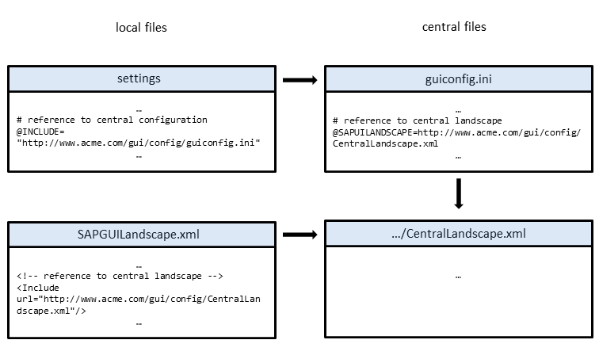
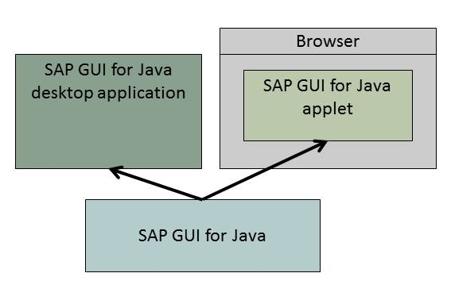

1 Introduction
SAP GUI for the Java Environment (SAP GUI for Java) is a unified SAP front end running on Linux, OS X and Windows for connecting to WebAS ABAP.
The technology behind SAP GUI for the Java Environment is a combination of Java and C/C++ running with the same codebase on all platforms.
All rendering is done in Java using Swing and JavaFX components to provide highly portable and consistant functionality on all supported platforms. The corresponding components of the standard ActiveX controls used in SAP GUI for Windows are reimplemented as JavaBeans. Already existing C/C++ libraries on the respective platforms are used for functions such as network communication, protocol handling, or RFC.
Various SAP branded themes like Signature Design, High Contrast, Corbu etc. are available as Swing Look and Feels to provide a consistent user experience for all UI elements and across all platforms.
In addition to the standalone "application" solution, SAPGUI for the Java Environment can also be used as an applet in a web browser, for example as part of a portal. The functionality is identical to the standalone solution.
Unlike most Java applets, the SAPGUI for the Java Envioronment applet requires installation on the front-end computer in order to work. This is necessary because of the native libraries used within SAPGUI.
For the current state and future plans regarding the Applet functionality please refer to SAP Note 2317316
2 Installation
2.1 Installation
Make sure you have installed a supported Java Virtual Machine (JVM) and the necessary runtime libraries. For further information, see System Requirements.
If you want to run the SAP GUI 7.50 with Java 11 please make sure you have installed SapMachine 11 and OpenJFX 11 (Installing SapMachine 11 and OpenJFX 11).
Then make sure you have installed the SAP GUI for Java providing a module path to the OpenJFX distribution (Installing the SAP GUI for use with Java 11).
The complete installation program is contained in the SAP GUI for Java package PlatinGUI-<Platform>-<Version>S.jar.
To install SAP GUI for Java, just follow the instructions below for a simple and dialog based procedure.
If you prefer a manual or remote installation as administrator for many clients with specific options to influence the installation procedure, see chapter 5.1.1 Advanced Installer Options for detailed informations about the installer commands.
to request a user ID. For more informations regarding software
download authorizations, see SAP Note 1037574 .- Go to SCN, to the SAP GUI Family homepage. From the
Downloads table select the Installations link for the current SAP
GUI for Java release and choose the appropriate installer for the
operating system of your client PC:
- Start the installation by double-clicking the downloaded file or by
executing the following shell command:Code Syntax
java -jar PlatinGUI-<Platform>-<Version>S.jar install - The installation is a guided procedure, you can easily follow the
instructions you get from the tool.
- Installation steps (1) Introduction & (2) Readme:
Read the information and click Next.
- (3) Define
Options:
Change the default settings for the Installation Directory or the Installation Log File only if necessary and decide whether you want to have a Desktop icon created automatically.
- Click Install.
Step (4) Install proceeds. SAP GUI for Java will be installed.
- (5) Summary: Check the installation details if necessary and close the dialog.
- Installation steps (1) Introduction & (2) Readme:
Windows and Linux platforms:
<home directory>/sapgui.log
OS X:
<home directory>/Library/Logs/sapgui.log
2.2 Uninstallation
java -jar PlatinGUI-<Platform>-<Version>S.jar uninstall
On Windows platforms you can remove a centrally-installed SAP GUI for Java using the Software control panel.
3 Getting Started
3.1 Getting Started on Windows
 Start
Start  Programs SAP Clients SAP GUI for Java
Programs SAP Clients SAP GUI for Java  from the Windows start menu.
from the Windows start menu. The logon window appears, select the SAP systems you want to connect to.
If the list of SAP systems is empty at startup, make sure your local configuration is correct (see chapter 3.4 Client Settings).
- Copy the SAP GUI for Java shortcut icon on the desktop to any name you choose.
- Open the Properties menu of the shortcut.
- On the Shortcut tab of the dialog, edit the (long) string contained in the Target field.
- At the very end of the string, replace ' Gui ' by ' Gui
-F -n -o ', and add the connection data of the SAP system
you want to connect to.Example (note the spaces between the arguments):
... com.sap.platin.Gui -F -n -o conn=/H/yourhost.yourdomain.com/S/3200
- Save the new icon by clicking OK.
3.2 Getting Started on Linux
If the list of SAP systems is empty at startup, make sure your local configuration is correct (see chapter 3.4 Client Settings).
Invoke the script guistart from the GUI installation directory with the connection data as a single argument.
guistart conn=/H/appserver.acme.com/S/3200
3.3 Getting Started on OS X
File Save Connection data as Document... , then chose a location and filename in the save dialog.conn=/H/appserver.acme.com/S/3200
3.4 Client Settings
3.4.1 Providing Connections
SAP GUI for Java needs configuration information about your SAP environment, such as the names and addresses of your SAP servers. Based on this information, a connection directory is offered which contains all available connections that can be selected in the SAP logon list. The necessary information is usually prepared by your system administrator, who will set up the configuration files. A configuration file can either be distributed to each front-end computer, or it can be kept centrally on an intranet web server, where all front-end computers can access it.
Various informations are usually merged into one single Configuration File so that the user only has to set one single file path or URL on his local client installation.
File Preferences Configuration Logon from the SAP Logon menu. A dialog box opens with five input fields:- General:
Usually your administrator will have merged all information into one file, so you have to enter the path or URL to this (local or central) Configuration File. In this case no further entries might be needed.
- Web AS:
Path or URL to a (local or central) SAP UI Landscape file, providing all relevant information to create a connection. It can already contain some predefined connections that are displayed in SAP Logon.
The SAP UI Landscape file might already be included by the Configuration File.
However, ask your system administrator for the right URLs.
3.4.2 Selecting SAP Systems for a Connection
- Select a system from the dropdown menu of the respective input field on the System tab.
- Select a suitable group/server entry for this system from the respective drop-down menu.
- Save the settings.
- Descriptive Header Area:
The descriptive name you enter here into the first line will later appear in the system list within the logon window.
- Connection Type:
Keep the default value Web AS ABAP as connection type to connect to a Web AS ABAP.
- Tabs for
3.4.2.1 The System Tab
- System:
First select an SAP system from the connection directory. The system's message server will then be asked automatically for a list of all groups and servers that are available for connecting to the selected system. The result will be displayed in the Group/Server list (note that this might take some time depending on the network connection to the message server). If the Group/Server list is empty, make sure that your message server list is configured correctly.
- Group/Server:
Select a logon group or an application server from the list. Selection of groups and servers is only possible if a valid system has been selected and if this system's message server has been contacted successfully.
- Router:
If you want to reach a remote SAP system using SAP router, select one from this list. Otherwise select (none). Note that the router settings will also affect communication with the message server as described above. If the list is empty and it is required to use a router, make sure your router list is configured correctly.
- Speed:
Activate this check box if you are using a slow WAN connection for this SAP system. The server will then try to optimize network communication by not transferring data before it is actually requested and by omitting expendable data (for example, decorative images).
3.4.2.2 The Language Tab
This tab defines the language and SAP codepage settings for the selected SAP system.
The application server needs to know the character encoding (ISO 88951-x, Shift-JIS or whatever else) it has to use to communicate with SAPGUI. This is done by defining a code page number when opening the connection to the server. This codepage depends on the language used when logging on to the server.
The Java Virtual Machine (JVM) itself needs to know about its language environment to set up the fonts needed to display the characters for different languages. This information is required on startup of the JVM and therefore has to be set before starting SAPGUI.
In summary you should have SAPGUI for Java running in the system locale for your primary language (this defines which set of characters your JVM will display), then you can define the language you want to use when talking to the application server for each system.
- Encoding
Definition:
Application servers support three possible strategies for finding the correct SAP codepages.
- Automatic:
The application server deduces the appropriate code page from the language and the client operating system given when logging into the Web AS ABAP.
- Custom:
If you want to override this automatic codepage selection, you can select the codepage with the language combobox. To override the proposed codepage you can specify the codepage number yourself. This is not recommended but may be necessary in rare circumstances (for example, using custom code pages).
- Unicode:
If you connect to a Unicode system you might consider using Unicode for the communication. You still need to specify a language and code page since the application server needs a fall back code page for talking to non-Unicode systems and legacy programs. This code page has to be correct because the application server has no possibility to correct errors in this scenario.
- Automatic:
- Language:
You can select the language you want to use here. This combo box is just for your convenience. You can select the information needed by language and do not have to look up the correct code page for your language. Selecting a language will automatically fill in the values for the codepage and the encoding.
- Code Page:
You can manually set the SAP codepage. This setting will be used for communicating with the Web AS ABAP server.
- Java Encoding:
The Java character encoding corresponding to the SAP codepage. You can only enter something in this field if the SAP codepage has no matching encoding built in. This is an extremely rare case and should not happen.
3.4.2.3 The Security Tab
This tab defines the Trust Level and the settings for Secure Network Communication (SNC). Note that you can only use Secure Network Communication if an SNC compliant security product (for example, SECUDE or Kerberos) is installed both on your front-end computer and on the SAP server.
- Trust Level:
Choose the trust level to be used for this Web AS ABAP system. Your choice will affect all connections with this system name. For information on trust levels in general and the build-in trust levels, please refer to the Security chapter (5.2.3 Security Policy).
- Enable Secure Network
Communication:
Activate this check box if you want to use SNC for this system. If the check box is disabled, SNC is not supported by your SAP server.
- SNC Name:
The SAP system's SNC name is defined by the message server and is displayed here for your information.
- SNC quality of protection:
Select one of the following check boxes:
-
Authentication:
Identity of the communication partners is verified. -
Integrity:
Integrity of the transmitted data content is verified. -
Encryption:
Transmitted data content is encrypted. -
Max. Available:
Automatically use best quality available (default). -
Use Manual Login (no SSO):
SNC is only used to encrypt the transmitted data, but not for Single-Sign-On.
-
3.4.2.4 The Logon Tab
This tab defines logon data that is automatically transferred to the SAP system's logon screen when the connection is established. These fields correspond directly to the fields on the logon screen. Empty fields are ignored.
-
Client:
SAP client for this connection. -
User:
SAP user name for this connection. -
Language:
2 letter language code for this connection (for example, EN). -
Transaction:
Enter a transaction code to start directly with this transaction instead of the default screen.
3.4.2.5 The Advanced Settings Tab
This panel displays the technical connection information as it results from the information in all other fields. It is provided for informational purposes and should only be changed by expert users. Changes made to this field will override all information specified in other fields.
-
Use Expert Configuration:
Activate this check box to edit the connection data for this connection manually.Note Note that when you deactivate the check box after changing the connection data manually, your manual changes will be lost and the edit field will again reflect the information configured in all other fields.
4 Working with SAP GUI for Java
4.1 SAP Logon Window
| Entry | Subentry |
|---|---|
| File |
|
| Edit | Contains some basic editing functions like Undo, Redo, Cut, Copy, Paste, etc. |
| View |
There are three different view types available:
Addtionally, the entries in List View and
Explorer View can be displayed with tiles or
with columns when the corresponding option is selected:
Further customization is possible in all three views:
|
| Scripts | A macro-like interface for the creation and execution of scripts. |
| Window | Contains some functions for window management. E. g. Minimize, Zoom, Switch Window and a list of all active sessions. |
| Help | Provides various forms of online help: |
View Types
There are three different view types available.- Hierarchy
Connections are displayed in a folder hierarchy. Above the hierarchy, there sits a list of favorites, which can be organzised in a hierarchical structure as well. For modifiying the hierarchy of connections or favorites, drag and drop can be used as well as entries like New Folder from the context menu.
- Explorer View
This view consists of two parts. On the left hand side there is a folder structure and on the right hand side all connections that belong to the currently selected folder are displayed.
- List
A sequence of all connections in alphabetical order is displayed. You can choose between a column view and tile view.
View Options
When displaying the view type Explorerview or List, there is the option to display the connections with a List with Tiles or a List with Columns. Latter can display following columns:- Name of the connection
- Description of the SAP system
- Connection Strings
- Info: an icon to identify if the connection has been created locally or comes pre-configured in a central configuration file.
- Type: displays the connection type.
4.1.1 Additional Functions
- New
Creates a new workspace.
- Delete
Deletes an existing workspace.
Note Only user created workspaces can be deleted while workspaces provided by a central configuration file can not be deleted. To distinguish these two types, an icon () is attached to all entries that are not created by the user. - Hide
Check or uncheck this checkbox to hide or show a workspace in SAP Logon.
To display all hidden Workspaces, select
View Show All Workspaces from the SAP Logon menu bar. Do the same to hide them
again. - Name
Enter the corresponding column inside the table to change the name of a workspace.
- Description
Enter the corresponding column inside the table to change the description of a workspace.
- Connections
- Connect to server
- Create a New connection, Edit or Delete an existing connection
- New Link: Creates a new connection entry as a link of an already existing system connection. The link takes over the connection string of the original connection entry. Log On settings like the Client, User and Language data as well as custom Security options can be set for each link individually independent of the original connection entry. To distinguish links from connections, an icon () is displayed next to the former one inside SAP Logon.
- Create a New Folder (initial name is "New Folder")
- Move connections or folders to another folder
- View options
- Show/Hide Memo
- Show/Hide Columns (only available with view option List Columns)
- Hide Entry
Hides a selected system connection or folder.
4.2 The Preferences Dialog
You can change the configuration and options of SAP GUI for Java using the Preferences Dialog
You can call it out of any session window as well as from the Logon Window:
To display the Preferences Dialog, select FILE Preferences from the toolbar.
Inside a session window, the FILE dropdown menu is displayed via an icon on the top left side of the menu bar.
On OS X, the menu bar is not displayed inside the SAP GUI for Java window, but on the menu bar of the operating system.
4.2.1 Configuration
See chapter 3.4.1 Providing Connections.
The Trust Level Editor is a helpful tool to facilitate the management of custom trust levels. It contains the default trust levels of SAP GUI that work as an initial basis for the creation of user generated trust levels, stored in the file SAPGUI.policy. For more details and information regarding the concept and implementation of trust levels see Chapter 5.2.3.1 Concepts and Implementation.
The following functions can be executed via the dropdown buttons Trust Levels and Permissions on top of the textedit control or by invoking the contextmenu inside of it. Before selecting a button, mark a corresponding row inside the editor via the left mouse button to select a certain trust level, or invoke the contextmenu directly via the right mouse button.
- Add Trust Level: Invokes the Trust Level
Properties dialog to add a custom trust level to the editor. The
following fields are to be edited:
- Key: Key name of a custom trust level "CLevel<number>". This value is not editable.
- Prinicipal Class: From the dropdown list, choose com.sap.platin.base.security.GuiSessionPrincipal.
- Copy Permission From: Select a default-, or a previously added trust level as a basis for creation.
- Display Name & Display
Description: These values are displayed on the
Trust level classification:<SID> popup ( FILE Edit Trust Level... ): "<Display Name>: <Display
Description>".
- Trust Level Order: This options affects the appearance of the list of available trust levels on the popup Trust level classification:<SID>. You can change the order using the mouse cursor.
- Assigned Systems: Number of systems the trust level is assigned to. This information is stored and editable in the trustClassification file.
-
Remove Trust Level: Removes the selected trust level.
-
Trust Level Properties...: Invokes the Trust Level Properties of an already defined trust level. Similiar result to the execution of Add Trust Level, except that the fields Principal Class and Copy Permission From are not to be edited and therefore not displayed.
-
Add Permission: After the execution of this function, the entry permission <PermissionClass> is created inside the editor, right below the selected custom trust level. Finally, right click <PermissionClass> and select an entry from the contextmenu to add a permission. You may also have to enter a "<target_name>" or an "<action>". For more information, see subchapter The Permission Entry.
-
Remove Permission
4.2.2 Design
SAP GUI for the Java Environment can be displayed in different themes and schemes. To
define a standard theme go to Design Theme in the Preferences dialog.
- Signature Design
- High Contrast
- Corbu
- Blue Crystal
-
Enable animated focus
The transfer of the focus from one screen object to another is visualized with an animation.
-
Enable animation
Some controls visualize their status changes using animations.
-
Use Corbu style icons
(Only available for SAP Signature theme)
For the Corbu theme, a new icon set has been designed. With this option, you can specify, if you want to use the new or old icon set. In Corbu, only the new icon set can be used.
For Signature Design it is possible to create different schemes and to set a default scheme for all systems. Further more, each system can have its own custom scheme.
Custom schemes can be created with the Hue shift value scrollbar and saved with the Save As button. To set a scheme as the default-theme, select a theme from the list and choose Apply.
After login to a system, a
scheme can be set for this particular system using the Menu File Set System Scheme for <SYSTEMNAME> . All possible schemes are displayed to choose from.
Some activities like pressing a button, changing the state of a radiobutton or checkbox and switching tabs of a tabstrip can trigger an audio feedback by default.
In this panel, font sizes can be set using preset combinations. Alternatively, fonts and font sizes can be set on an individual basis via radiobutton Use Expert Configuration.
Expert Configuration
Expert Configuration enables the possibility to customize different font settings for Dialog Font, Fonts for Web AS ABAP as well as Fonts for Web Dynpro. Just switch to one of the tabs and click the button Choose... to change the corresponding settings.
4.2.3 Desktop
This section contains information about the configuration of default applications and standard programs for SAP GUI for Java.
- depending on the operating system where SAP GUI for Java is installed on, or
- independent from the operating system, provided by the GUI, called SAPGUI. This mainly serves as an internal fall back.
Changing the Desktop Integration Model does not only effect the Application settings but also the Mime Type and Printing settings from the Desktop section of the Preferences dialog.
You can choose a default Web Browser and change the Download Directory as well as the Upload Directory of SAP GUI.
Enter an appropriate path into the corresponding editfield, or click on the button Browse ... to change the Web Browser or a Directory.
To adopt the changes press Apply.To handle MIME types, it is possible to set appropriate applications. You can also add additional extensions to a MIME type.
-
Select a MIME type from the list and press the button Add ... to add an extension.
-
Enter the path to an application into the corresponding editfield or simply press the button Browse ... to define an application to handle MIME types.
4.2.4 Other
The input by the user is stored locally by default. To modify the Input History settings, the following options are available:
| Setting | Function |
|---|---|
| Off | No input history is available. |
| On |
Input history is available. Your input is stored locally in the database. When you enter data or press the backspace key, a list of recently entered data in the same field is displayed (ABAP field names must be available for this feature to work, which is not the case for "low speed connections", see 3.4.2.1 The System Tab). To dis- or reenable input history on a per field basis, open the context menu on the corresponding inputfield to see a menu item "disable history" or "enable history". |
| Expire afterX Month(s) |
Specifies when entries are considered obsolete and can be deleted. |
| Keep history for: X Inputfields |
Specifies how many values are stored. |
| Display: X Entries in history list | Specifies how many entries will be displayed from the history list |
| Clear History |
All history items are deleted. This applies across all systems. |
- Accessibility Mode
- On: Enables the Accessibility Mode
- Off: Disables the Accessibility Mode
- Modifiers for Traversal Modes
- Modifier for travers groups: CTRL + Tabulator
- Modifier for travers in dynamic accessibility mode: CTRL + ALT + Tabulator
- Focus attraction
- On: Highlights the currend focus position when using the CTRL key.
- Off: Disables Focus attraction
-
Screen reader support
Screen readers work by speaking aloud the elements and fields displayed in the application window. With the aid of the screen reader, visually-impaired users are able to navigate through the application, enter data, and use the full range of functions available in the application.
To make use of this feature, a third party screen reader has to be installed.
- Current default values: Shows the current System Default as well as the User Default version of SAP GUI for Java
- Installed Versions: A list of all SAP GUI for Java versions
that are istalled.
-
To set a default SAP GUI for Java version select one of the entries from Installed Versions and press the button Set default GUI. The changes will be displayed under Current default values.
-
To remove a default SAP GUI for Java version, press the corresponding button: Remove default GUI.
- To adopt the changes press Apply.
-
There are three categories of certificates:
- User accepted certificates
- SAP certificates
- JRE certificates
- Import: Imports a certificate from a local file.
- Export: Exports an accepted certificate to a file on the harddisk.
- Remove: Removes an certificate.
- Details: Displays a popup containing the data of the certificate.
It is neither possible to change SAP certifcates nor JRE certificates. So, only the button Details is available.
4.2.5 Web AS ABAP
- Automatically move focus to next input field when reaching the end of input field
- Select all text tabbing into field (insert mode only): After tabbing into an inputfield, the complete content is selected. This allows to overwrite the text with the first character typed or to directly apply any clipboard actions with it.
- Overwrite: Sets the input method to overwrite (OVS) at system start. Otherwise the input method is set as insert (INS). You can switch between OVS and INS inside the system clicking on the corresponding entry on the right hand side of the status bar.
This Option defines which textelements and editfields will be copied to the clipboard using the corresponding function.
- Copy text of entryfields and labels
- Copy text of enabled entryfields only
Use CTRL + Y for tab delimited and CTRL + SHIFT + Y for space padded text.
- Drag and Drop
- Drag and Relate
- Fit to page
Enable this option so that the selected screenarea fits the page. Otherwise the actual size will be printed.
Scripting simplifies user interaction with SAP GUI by offering a macro-like interface that can be used for automating tasks.
SAP GUI for the Java Environment can be automated by executing scripts that emulate user interaction. These scripts can be created manually from scratch, or by recording user interaction. While a simple script may be used to present data on a SAP GUI screen, more complex scripts can easily automate whole transactions and even open connections to SAP systems automatically.
SAP GUI for the Java
Environment comes with a built-in JavaScript engine. Detailed documentation is
available in the SAP GUI Scripting document on SAP Community
Network.
To enable or disable Scripting in SAP GUI for Java, select the corresponding combobox: On or Off.
By the following options you can set notification messages about the scripting behavior and determine how a script has to be recorded:
-
To enable notifications when an external script calls into SAP GUI or an external script requests to open a connection, the corresponding checkboxes have to be set.
- Recording can be done
- with absolute ID
The connection number, session number and window number are recorded by this option and must exactly correspond to replay a script.
application.findById("/app/con[<connection_number>]/ses[<session_number>]/wnd[<window_number>]/...").<action> - with relative ID
This option is set by default. Only the window or userarea are recorded and must correspond to replay a script.
userarea.findById("...").<action>;window.findById("...").<action>; - with common SAP GUI ID
This option records a script by session and window number.
session.findById("wnd[<window_number>]/...").<action>;
- with absolute ID
- Contextmenus can be recorded:
- by position
- by key
- by text
The default directory where scripts are saved depends on the operating system SAP GUI is installed on. To add additional or to remove existing directories, press the corresponding buttons Add... or Remove.
- Status messages
- Show status bar text in new dialog: In addition to the status bar, a dialog displaying the status message will be displayed. This can be enabled or disabled separately for each message type: Success, Warning and Error.
- Dropdown listbox
- Always show keys: In addition the the listbox
text, keys will be displayed for the corresponding item (if
available).
- Sort items by key: Instead of the text, listbox items will be sorted by their key values if this option is enabled.
- Always show keys: In addition the the listbox
text, keys will be displayed for the corresponding item (if
available).
- Window title
- Show long window name
4.3 Elements of an SAP GUI for Java Session
The system function bar is placed below the menu bar. It consists of a range of icons with general GUI functions and the command field. The command field is used to enter a transaction code.
| Icon | Corbu Icon | Description |
|---|---|---|
| OK / Enter | ||
| Save as Variant... | ||
| Back | ||
| Exit / Log off | ||
| Cancel | ||
 |
||
| Find | ||
| Find next | ||
| First Page | ||
| Previous Page | ||
| Next Page | ||
| Last Page | ||
| Create Session | ||
| Help |
The title bar contains the name of the application currently being displayed.
The application bar is located below the title bar. The application bar contains icons relevant to the specific application.
The status bar provides general information on the SAP system and the transaction or task you are working on. System messages are displayed on the left side of the status bar.
There are three fields on the right hand side of the status bar: one containing server informations and the other two with status informations.
The status fields are described from left to right:
| Status Field | Description |
|---|---|
 / / |
Identifies an error message |
| / |
Identifies a warning message |
| / |
Identifies a success message |
| / |
Hides or displays the status fields |
|
Example: Y1A (1) 000 |
Displays the system and client you are logged on to. The number in brackets is the ordinal number of the session |
| / |
Displays the following system information:
|
| : Example: bsw6523 |
Displays the application server you are connected to |
|
INS or OVR |
Specifies your date entry mode. By clicking on this field, you can toggle between INSERT (INS) and OVERWRITE (OVR) modes. |
5 Reference
5.1 Running the SAP GUI for Java with Java 11
5.1.1 Requirements and technical background
Since Java 11 JavaFX is no longer part of the Java distribution but is provided by an external OpenJFX distribution.
So with Java 11 the SAP GUI for Java can no longer rely on a Java VM including JavaFX. Instead it must be able to use any OpenJDK distribution together with an appropriate OpenJFX distribution.
We recommend using SapMachine 11, together with OpenJFX 11.
5.1.2 Installing SapMachine 11 and OpenJFX 11
You can get the current versions of SapMachine from:
https://sap.github.io/SapMachine
You can find the OpenJFX distribution here:
https://openjfx.io/ leading to:
https://gluonhq.com/products/javafx/
You will need the appropriate SDK for your platform:
http://gluonhq.com/download/javafx-11-sdk-windows/
http://gluonhq.com/download/javafx-11-sdk-mac
http://gluonhq.com/download/javafx-11-sdk-linux/
We recommend to keep the Java VM and OpenJFX installations together.
On Linux:
/opt/java/sapmachine-11.x.x
/opt/java/javafx-sdk-11
Just unpack the Java VM distribution package and the OpenJFX distribution package below /opt/java
Then put /opt/java/sapmachine-11.x.x/bin into your PATH or set PLATIN_JAVA to /opt/java/sapmachine-11.x.x/bin/java.
The module path to load the JavaFX modules will then be /opt/java/javafx-sdk-11/lib
On MacOS:
/Library/Java/JavaVirtualMachines/sapmachine-jdk-11.x.x.jdk
/Library/Java/JavaVirtualMachines/javafx-sdk-11
Just unpack the Java VM distribution package and the OpenJFX distribution
package below
/Library/Java/JavaVirtualMachines
Please verify the installed Java VM is listed with
/usr/libexec/java_home -V
com.sap.platin and key JDKPATH.
The module path to load the JavaFX modules will then be
/Library/Java/JavaVirtualMachines/javafx-sdk-11/lib
On Windows:
C:\Program Files\Java\sapmachine-11.x.x
C:\Program Files\Java\javafx-sdk-11
Just unpack the Java VM distribution package and the OpenJFX distribution
package below C:\Program Files\Java
Then put
C:\Program Files\Java\sapmachine-11.x.x\bin
into your PATH or set PLATIN_JAVA to
C:\Program Files\Java\sapmachine-11.x.x\bin\javaw.exe .
The module path to load the JavaFX modules will then be
C:\Program Files\Java\javafx-sdk-11\lib
5.1.3 Installing the SAP GUI for use with Java 11
The SAP GUI for Java uses the system wide standard Java VM installed on the local desktop computer, or the executable pointed to by PLATIN_JAVA if this is set.
The bootstrap code determines the Java VM to use from the PATH environment variable (Linux, Windows) or other facilities provided by the desktop window system (the application bundle's Info.plist entry on MacOS).
Then the SAP GUI is started with the provided Java VM and checks that all requirements are met, or complains.
This means the bootstrap code needs a way to start the Java VM with a module path referencing the independently installed OpenJFX modules. The path to these modules has to be provided on installation, and is then registered inside the installation for use when starting the SAP GUI.
There are three ways to provide a module path to the installer.
- Using the graphical installer
java -jar PlatinGui-<platform>-<version>.jarYou can then fill in the module path on the options page into the field "Module Path". If the installer is started with Java 11 it will verify that your path to the OpenJFX modules is correct, or disable the "Install" button until it can find the modules.
If the Installer is started with Java 8, JavaFX is included in the running Java VM, so the installation will not complain about a missing module path.
- Starting the installation providing the module path as an installation
option
java -jar PlatinGui-<platform>-<version>.jar -a /path/to/jfx-11/libThis will start the graphical installer and fill in the module path given as parameter to the -a option.
java -jar PlatinGui-<platform>-<version>.jar -G -a /path/to/jfx-11/lib
will start the installation on the command line and register the given module path in the installation. - Starting the Java VM for the installer with the
-p/--module-pathoptionjava -p /path/to/jfx-11/lib --add-modules ALL-MODULE-PATH -jar PlatinGui-<platform>-<version>.jarIf there is no module path provided with -a the installer checks if the Java VM itself has been given a module path on startup.
The graphical installer will then fill in this module path, from the
--module-pathgiven to the Java VM and register it in the installation.The command line installer will just register this path in the installation.
5.2 Administration
5.2.1 Advanced Installer Options
You find the necessary information here if you prefere to install SAP GUI for Java manually or remote as an admistrator for many client PCs in parallel.
jarsigner -verify -verbose PlatinGUI-<Platfor>m-<Version>S.jar
java -jar PlatinGUI-<Platform>-<Version>S.jar version
java -jar PlatinGUI-<Platform>-<Version>S.jar [command] [options]
java -jar PlatinGUI-<Platform>-<Version>S.jar install [options]
java -jar PlatinGUI-<Platform>-<Version>S.jar [options]
| Option | Description |
|---|---|
| --help, ? | Print all installation options. |
| --force, -f, negated: --noforce, -F | Normally the installer will do nothing if it detects that this version of the SAP GUI for Java is already installed, -f forces a reinstallation. |
| --installdir <path>, -d <path> | Absolute path to installation directory if this option is omitted a reasonable platform dependent default location is used. |
| --verbose, -v, negated: --noverbose, -V | Provide verbose installation output on the console. |
| --standard, -s, negated: --nostandard, -S | Use standard options and install without user interaction. This
is not a silent installation since progress indication and
installation summary and all error dialogs are still displayed.
This is well suited for automatic graphical installations. |
| --desktopicons, -m, negated: --nodesktopicons, -M | Install desktop menu and shortcuts. Per default this option is true so usually it is used as negated option -M, --nodesktopicons to prevent icons and menu entries to be created. |
| --gui, -g, negated: --nogui, -G | Use the graphical user interface for the installation. Per default this option is true
so to turn off the graphical user interface use the negated form of
the option -G,
--nogui. If you turn off the graphical user interface you will get error messages and a short installation summary on the console. |
| --register, -r, negated: --noregister, -R | Centrally register the executable application as application path on Windows, as link into /usr/bin on Linux |
| --inputfile <path>, -i <path> | Provide an installation response file to define installation parameters |
| --logfile <path>, -l <path> | Write the installation log to the path |
| --modulePath <path>, -a <path> | Specify module path to Java VM external modules |
| --trace <tracekey1:tracekey2>, -t <tracekey1:tracekey>, | Activate tracekey1 and tracekey2 during installation. Traces are always written to standard error. |
java -jar PlatinGUI-<Platform>-<Version>S.jar uninstall
The uninstall command removes an installed version of the SAP GUI for Java.
java -jar PlatinGUI-<Platform>-<Version>S.jar version
The version command just lists version information for the installation package.
Build date: : 2014-07-26 06:06:02 +0200 Build Info : ldm046, 740_REL, 1478851 Product type : 1 Numeric Version : A074000040100 Short Version Number : 7.40rev1 Long Version Number : 7.40 rev 1 Short Version : SAPGUI7.40rev1 Long Version : SAP GUI 7.40 rev 1 Full Version : SAP GUI for Java 7.40 rev 1 Official Version : SAP GUI for the Java Environment 7.40 rev 1
You can automate the installation process by providing an installation response file using the -i <responsefile> option to the install command.
| Property | Description |
|---|---|
| installdir=<path> or installpath=<path> | Absolute path to installation directory. If this option is omitted a reasonable platform dependent default location is used. (same as -d <path>). |
| disableui=true | Disables the interactive graphic installation program. All installation parameters have to be supplied using an installation response file or as command line options. All installation messages are written to standard output and standard error (same as -G). |
| automatic=true | If all necessary parameters are specified only show progress indication and error dialogs (same as -s). |
| reinstall=true | If this version of the SAP GUI for Java is already installed it is silently reinstalled and the installation proceeds as normal (same as -f). |
| uninstall=true | Remove the SAP GUI for Java installation if this version is installed, then exit (corresponds to the uninstall command). |
| logfile=<path> | Absolute path to installation log file including file name (same as -l <path>). |
| noshortcuts=true | Do not create desktop menus and desktop shortcuts (same as -M ). |
| registerapplication=true | Centrally register executable application as application path on Windows, as link into /usr/bin on Linux (same as -r). |
Complete lines can be commented with "#".
Example of a Typical Response File:
# Example of a typical installation response file # suppress user interaction disableui=true # install to the default path installidir=default # reinstall gui if already present reinstall=true
java -jar PlatinGUI-<Platform>-<Version>S.jar uninstall
On Windows platforms you can remove a centrally-installed SAP GUI for Java using the Software control panel.
By default, the GUI start scripts use the Java Runtime Environment found in PATH (see requirements) or the application registration. On Windows and Linux, it is possible to use a different Java Runtime Environment then provided by PATH, if available. To do so, you have to specify it using the PLATIN_JAVA environment variable which points to the Java executable to be used. For example: /usr/bin/java. You can also use PLATIN_JAVA to provide the Java Runtime Environment with additional options.You can add the bin directory of the SAP GUI installation to your PATH in order to allow the invocation of the SAP GUI for Java from everywhere.
Instead you can set the path to the JDK bundle with the OS X user defaults system (
/usr/bin/defaults) for domain com.sap.platin and key JDKPATH
defaults write com.sap.platin JDKPATH
/Library/Java/JavaVirtualMachines/sapmachine-jdk-11.x.x.jdk
5.2.2 Configuration Files
5.2.2.1 Centrally Managed Configurations
To allow for central configuration management within an enterprise, the local configuration file can include a reference to a central configuration file (which is typically located on an intranet web server). The format of local and central configuration files is identical. Both the local and the included configuration file are evaluated by SAPGUI for the Java environment.
As of SAP GUI for Java 7.40, information formerly stored in seperate files for messager
servers, routers, system descriptions, etc., are now stored in one single Landscape file, as well as the
custom connection entries that were stored in the connection file
before. Used as a central Landscape file, SAP systems relevant to all users can be put
into in this file, so that they are available at all front-end computers. In such an
environment, the only setup activity required by the end user is to enter the URL for
the central configuration file (with an include parameter pointing to a Landscape file)
in the Configuration
File field of the Options Preferences Configuration dialog.
@INCLUDE = "<included_configuration_file>" @SAPUILANDSCAPE = "<path_to_(central)_Landscape.xml>" @ProxyPACURL = "<path_to_ProxyPACURL>" @proxyMode = "<proxyMode_value>"
5.2.2.2 Local Configuration Files
- Windows:
<home directory>\AppData\LocalLow\SAPGUI\
- OS
X:
<home directory>/Library/Preferences/SAP/
- Linux:
<home directory>/.SAPGUI/
- Location of an included configuration file (filename or URL) providing settings and referencing to a central Landscape.xml file.
- Options the user has defined in the preferences dialog (like fontsize, etc.)
This information correspond to the entries made in the Options Preferences Configuration menu (see chapter 3.4.1 Providing Connections) and the system list
displayed in the logon window.
- Connections to SAP systems defined by the user
- Hierachical structure on the SAP logon items when using hierarchical view
- User specific notes attached to a connection string
- System descriptions
- Message server entries
- Router entries
- URLs for getting a system status of an SAP system
These local configuration files are created empty when the SAP GUI for Java is started the first time, or they import the values stored in connections and connectionTree.XML from versions before 7.40, if present. Please note that this import only happens once.
5.2.2.3 Installing Custom Templates
Most of the configuration files can be created from customized templates, installed together with the SAP GUI. Installed templates are used for settings, trustClassification, applications, globs and externalCommands.
- Create files named settings.template with your customized content.
- Pack this file into a jar archive named
templates.jar:
jar -cf ./templates.jar settings.template
- Put the templates.jar file in the same directory as the SAP GUI for Java installation jar.
- Start the usual installation process.
5.2.2.4 Overview on Local/Central Files

5.2.3 Security Policy
Every discussion about security always needs a backing security policy to define the meaning of security and to define what is acceptable and what is considered a threat.
The security concepts of the SAP GUIs are not concerned about securing the application server or to define who is allowed to connect to an application server but in contrary they deal with the question of controlling the access of back end ABAP code to local front end resources.
The SAP GUIs can access the local file system, are able to start child processes and also can access the configuration of the front end operating system by reading or writing configuration data or accessing system APIs.
For an ABAP program the SAP GUIs can act as service provider for printing documents or storing data in local files or retrieve information from the front end.
Since the SAP GUIs are run with usual user privileges, the possibilities to access or alter data are confined to the privileges granted to the current user account, still there is potential to disclosure or damage of user private information.
Different application servers may impose different trust relationships. A productive internal system running the local organizations human resources applications needs to be handled differently than a locally accessible system used for program development, where a lot of different people have access and also have the possibility to write their own (maybe just buggy or even malicious) code and where it is always possible to have a negative impact to local information, or a external system belonging to a customer or business partner.
On the other hand the SAP GUIs have more knowledge about the context of operations than the front end operating system and so can base their access control decisions on the trust relationship of the application server and the specific application running on this server.
The security concepts and the possibility of the SAP GUIs to control the access to local resources will not be sufficient for areas with a very high sensitivity, where the control of all data input and data output is mandatory. The only really reliable way to run client software in such an environment is to run the client in its own change root, or virtualized, sand box without access to the data on the host operating system at all.
5.2.3.1 Concepts and Implementation
The SAP GUI for Java is running with a security manager enabled. So in principle the same rules as for running the SAP GUI for Java as an applet imply.
The SAP GUI for Java has a large number of relations to the host operating system. To access features of the desktop it has to be able to access system specific interfaces like read access to the registry or the mime type database access on XDG compliant Unix systems.
Often the SAP GUI for Java will need to run system utilities to spool documents for printing or to open an appropriate document viewer to display documents.
The SAP GUI for Java also provide mostly file based utility services to the server side application. Most of these services are contained in the ABAP class CL_GUI_FRONTEND_SERVICES.
The SAP GUI for Java tries to confine the access to local resources into private compartments exclusively reserved for the SAP GUI for Java, and only accessible to the current session. The back end only knows about four distinct path names on the front end. These are the “temporary directory”, the “SAP work directory”, the upload directory and the download directory for the SAP GUI for Java. The temporary and the SAP work directory depend on the system and the current session, e. g. ".../<Temp>/<User>/SAPGUI/<SID>.<ID_Key>". The life time of data in the temporary directory is restricted to the life time of the session. The life time of data in the work directory is defined by the application creating the data unless it is sensed that the data is specifically transferred only to display it, then it is also deleted when the session is closed. Data in the upload and download directory belongs to the user and is not managed by the SAP GUI for Java.
The back end is allowed to write and read data in the work and temporary directory and to create new files in the download directory. It is also allowed to upload data from the upload directory. All other directories including the SAP GUI for Java configuration information although accessible for the SAP GUI for Java are forbidden to the back end by default.
Usually most of the back ends will form clusters of similar trust relationships. There will be several systems in productive use one really has to trust and requiring access to local resources as well there will be development systems belonging to the local organization which should not need special access to local resources.
These different structures can be addressed with trust levels.
A trust level is a special principal granted a set of permissions. You can assign this trust level to an arbitrary number of systems. All systems assigned to a trust level will then share this same set of permissions.
Trust levels are completely independent and are not comparable. There are no inheritance relations between trust levels. The set of permissions comprising a trust level has to be complete and explicit. If you want trust levels to share some of the permissions specify them on both of the trust levels.
You specify the permissions for a trust level by writing a grant entry for the trust level:
grant principal com.sap.platin.base.security.GuiSessionPrincipal "#Level3" {
permission com.sap.platin.base.security.ApplicationPermission "<<ALL FILES>>","openDocument";
permission com.sap.platin.base.security.ApplicationPermission "*", "openURL";
};This example defines the permissions for a a trust level with the technical key “Level3” which allows to show documents of all types from all local locations on your hard disk, and also allows to open an external browser to all URLs.
The possible trust levels are stored in your settings and their technical keys always start with a hash sign (“#”) since the GuiSessionPrincipal class assumes all principals with an system name starting with a hash to be trust levels.
- <system preferences>/SAPGUI.policy
- <user preferences>/SAPGUI.policy
- <system preferences>/trustClassification
- <user preferences>/trustClassification
- <user preferences>/settings
The SAP GUI for Java loads its policy information from several different locations. The first set of policy entries is read from the default Java VM locations for the system wide Java VM policy definitions and the user specific definition. Then the SAP GUI for Java loads the policy file in its system wide preferences directory, and at last the policy file in the users preferences directory.
These policy files will define sets of permissions granted to different trust levels.
The statements in all these policy files are merged. Since the policy is strictly a white list of permitted actions there are no conflicts between different policy sources.
Each system can be assigned a to trust level. And these assignments are persisted in the trustClassification file.
The assignment of a system to a trust level is done from the SAP GUI's connection list. On editing a connection one can assign the system to a trust level using the Trust Level combo box on the Security tab (essentially assigning the application server systemID addressed in the connection to the trust level).
A list of active trust levels together with technical keys, descriptions and trust level names is stored in the settings file. The relevant key is @activeTrustLevels for example:
@activeTrustLevels = "Level4:Productive:Fully trusted. Needs access to local resources;Level3:Internal:Generally trusted, does not require extensive privileges." @defaultTrustLevel="Level 3"
These settings will just provide two levels Level 4 and Level 3 and specify that the default value for the selection in the combo box will be Level 3.
5.2.3.2 Policy Syntax
The policy syntax used for the system global and user private policy files is documented in Java SE Documentation[2]. Additionally the SAP GUI for Java provides you with information about the system an application server belongs to, the transaction and the program name of the code requesting a front end related operation.
So one can restrict permission statements to a specific trust level, application server transaction or ABAP report.
Code being executed is always considered to come from a particular “code source” (represented by an object of type CodeSource). The code source contains the location (URL) where the code originated from. Code is also considered to be executed as a particular principal (represented by an object of type Principal), or group of principals.
Each Grant Entry[2] includes one or more “permission entries” preceded by optional codeBase and principal name/value pairs that specify which code you want to grant the permissions. The basic format of a grant entry is the following:
grant codeBase "URL",
principal principal_class_name "principal_name",
principal principal_class_name "principal_name", … {
permission permission_class_name "target_name","action";
permission permission_class_name "target_name","action";
…
};All non-italicized items above must appear as is (although case doesn't matter and some are optional, as noted below). Italicized items represent variable values.
A grant entry must begin with the word grant.
The codeBase, and principal values[2] are optional, and the order of these fields does not matter.
A principal value specifies a class_name/principal_name pair which must be present within the executing thread's principal set. The principal set is associated with the executing code by way of a Subject.
The principal_class_name may be set to the wild card value *, which allows it to match any Principal class. In addition, the principal_name may also be set to the wild card value *, allowing it to match any Principal name. When setting the principal_class_name or principal_name to *, do not surround the * with quotes. Also, if you specify a wild card principal class, you must also specify a wild card principal name.
The principal field is optional in that, if it is omitted, it signifies “any principals”.
A codeBase value indicates the code source location; you grant the permission(s) to code from that location. An empty codeBase entry signifies “any code”; it doesn't matter where the code originates from.
grant codeBase "file:///C:/somepath/api/" {
...
};The exact meaning of a codeBase value depends on the characters at the end. A codeBase with a trailing "/" matches all class files (not JAR files) in the specified directory. A codeBase with a trailing "/*" matches all files (both class and JAR files) contained in that directory. A codeBase with a trailing "/-" matches all files (both class and JAR files) in the directory and recursively all files in sub directories contained in that directory.
GuiSessionPrincipal
Since the system ID, the transaction and program are known to the SAP GUI for Java it tags the requests with this context information. This context information is provided to the user in the form of a special principal.
There are two general forms to write a GuiSessionPrincipal:
grant principal com.sap.platin.base.security.GuiSessionPrincipal
"SYS:trans:prog:sessionID" {
...
}
grant principal com.sap.platin.base.security.GuiSessionPrincipal "#TrustLevelKey"
{
...
}SYS denotes the system ID of the application server, trans the current transaction code, prog the actual name of the ABAP report. sessionID will be set to a unique ID for the session. The session ID will only be valid for the currently running session so this field is not useful in a policy file but is needed to isolate concurrent sessions.
All of the parts after SYS are optional or can be replaced with a "*" to match an arbitrary filed value.
When checking a GuiSessionPrincipal against a grant clause written in the second form (with a principal name like "#TrustLevelKey" the system part of the principal name is expanded to the trust level of the system currently connected to.
The basic form of a Permission Entry[2] looks like:
permission permission_class_name "target_name", "action";
A permission entry must begin with the word permission. The word permission_class_name in the template above would actually be a specific permission type, such as java.io.FilePermission or java.lang.RuntimePermission.
The "action" is required for many permission types, such as java.io.FilePermission (where it specifies what type of file access is permitted). It is not required for categories such as java.lang.RuntimePermission where it is not necessary - one either has the permission specified by the "target_name" value following the permission_class_name or not.
FilePermission
The general forms of a java.io.FilePermission look like:
permission java.io.FilePermission "${/}path${/}to${/}file", "read,write";
permission java.io.FilePermission "${/}path${/}to${/}*", "read,write";
permission java.io.FilePermission "${/}path${/}to${/}-", "read,write";A FilePermission represents access to a file or directory. A FilePermission consists of a path name and a set of actions valid for that path name.
The valid actions for a FilePermission are read, write, delete and execute or any comma separated combination.
The path name is the path to the file or directory granted the specified actions. A path name that ends in "${/}*" (where "${/}" is expanded to the local path separator) indicates a directory and all the files contained in that directory. A path name that ends with "${/}-" indicates a directory and (recursively) all files in sub directories contained in that directory. A path name consisting of the special token "<<ALL FILES>>" matches any file.
A path name consisting of a single "*" indicates all the files in the current directory, while a path name consisting of a single "-" indicates all the files in directories below the current directory.
In the context of the SAP GUI for Java there is no value in working with relative path names, since there is no real control over the current directory.
When specifying a java.io.FilePermission, the "target_name" is a path name. Please always use the ${/} pattern to specify the path separator. The policy parser will expand this pattern to the correct path separator for the system it is running on.
ApplicationPermission
A FilePermission is a very low level permission without semantic information. One can not conclude from a file permission why a file has to be accessed. If data is to be uploaded to the back end or if the file has to be read to be displayed in a document viewer, or if a file has to be read because it is a executable to be started.
It is helpful to have more abstract semantically defined permissions.
- Opening documentsFor opening documents the SAP GUI for Java provides the "com.sap.platin.base.security.ApplicationPermission" with an action "openDocument>"Only one permission is needed to be able to allow all actions necessary to display a given local document in the appropriate associated application. One can restrict the file path with the same syntax as for a FilePermission and additionally can restrict the file type with the additional mime type qualifier (possibly using a "*" wild card like "text/*")
permission com.sap.platin.base.security.ApplicationPermission "${/}path${/}to${/}file[mime type]", "openDocument"; - Opening URLs in an external browserOpening URLs in an external browser can be controlled using the "com.sap.platin.base.security.ApplicationPermission" with the "openURL" action.Wild cards can be used to specify URL ranges for instance to match all URLs of one domain (*.domain.org).
permission com.sap.platin.base.security.ApplicationPermission "http://www.site.org", "openURL";
- Letting the back end start executablesUsing the "com.sap.platin.base.security.ApplicationPermission" with the "openApplication" action is not much different to using a FilePermission with the action "execute" but using an "ApplicationPermission" only needs one permission which is checked early on to allow everything that is necessary to allow starting a specific application.
permission com.sap.platin.base.security.ApplicationPermission "${/}path${/}to${/}executable", "openApplication";
5.2.3.3 Default Trust Levels
grant principal com.sap.platin.base.security.GuiSessionPrincipal "#Level5" {
permission java.security.AllPermission "<<all permissions>>";
};
grant principal com.sap.platin.base.security.GuiSessionPrincipal "#Level4" {
permission java.lang.RuntimePermission "getenv.*";
permission com.sap.platin.base.security.ApplicationPermission "<<ALL
FILES>>", "openDocument";
permission com.sap.platin.base.security.ApplicationPermission "${InternalPath:F_GUILOGON}", "openApplication";
permission com.sap.platin.base.security.ApplicationPermission "*", "openURL";
};
grant principal com.sap.platin.base.security.GuiSessionPrincipal "#Level3" {
permission java.lang.RuntimePermission "getenv.*";
permission com.sap.platin.base.security.ApplicationPermission "<<ALL FILES>>",
"openDocument";
permission com.sap.platin.base.security.ApplicationPermission "*", "openURL";
};
grant principal com.sap.platin.base.security.GuiSessionPrincipal "#Level2" {
permission com.sap.platin.base.security.ApplicationPermission "<<ALL FILES>>",
"openDocument";
};
grant principal com.sap.platin.base.security.GuiSessionPrincipal "#Level1" {
};5.3 Using SAP GUI for Java as a Browser Applet
Unlike most Java applets, the SAP GUI for Java applet requires the local installation of SAP GUI for Java in order to work properly. This is necessary because of the native libraries used within SAP GUI.
-
If an appropriate installation was found a browser will be opened do display e.g. the transaction offered by the link.
-
If no appropriate installation was found the download and local installation of SAP GUI for Java will be triggered. The installation takes place as a visible procedure, the user can follow the steps visually but he or she does not have to interfere. After the installation has finished the link will be opened. This procedure will be performed only once, in fact when a user opens such an applet link for the very first time. After that the installation will be found and the applet will be performed directly.
for further
details and the configuration of supported browsers. In regard of sandboxing of
plug-ins in Safari 7 and above, see SAP Note
1995842 .
For the current state and future plans regarding the Applet functionality please refer to SAP Note 2317316
If SAP GUI for Java applets shall be used within your system landscape a dedicated infrastructure has to be set up by the respective administrator. You will find the detailed information about the required Web Server within the following chapters
5.3.1 Signed Applets
SAP GUI for the Java Environment makes use of a technology called Signed Applets. The Java applet that is used to start SAP GUI for the Java Environment carries a digital signature, certifying that the applet code was created and signed by SAP and has not been tampered with. The validity of SAP’s digital signature is in turn certified by a Root Certificate Authority (root CA), in this case Verisign Inc.
- Run
If selected, the applet will be granted unrestriced access to your computer. Any signed applet signed using the same certificate will be trusted automatically within the same browser session.
- Set checkbox Do not show this again for apps from the publisher location
above and press Run:
If selected, the applet will be granted unrestricted access to your computer. Any signed applet signed using the same certificate will automatically be trusted in the future and no security dialog will pop up again when this certificate is encountered again. This decision can be changed in the Java Plugin Control Panel.
- Cancel
If selected, the applet will be treated as an untrusted applet. Since the successful execution of SAP GUI for the Java Environment relies on the signed code, choosing this option will prevent the execution.
- More Information
Select this option and click View Certificate Details to examine the attributes of each certificate in the certificate chain.
5.3.2 Web Deployment
Web installation is triggered by the content of a web page that was set up by the system administrator. If there is currently no SAP GUI for the Java Environment installed on the front-end computer, or if the version does not meet the requirements specified on the web page, the automatic installation is triggered. In order for this to work, your web browser security settings must be set to enable download and installation of controls and executable files.
The SAP GUI for the Java Environment applet will be downloaded and started from the website provided.
In order to run the applet with the required privileges, its signature has to be verified. Click 'Grant always' or 'Grant this session' on the certificate verification dialog. This will ensure that the GUI applet code can run as a trusted applet (this dialog only appears if the certificate has not been generally accepted by clicking Grant always).
If there is no SAP GUI for the Java Environment installed or if the installed version is older than the version requested on the web page, the installation will be started.
When the installation has finished, the SAP GUI for Java is started.
Several versions of SAP GUI for Java can be installed and run on a single front-end computer in parallel. However, only one of the installed versions can be used within the web browser at one time. This dedicated version is called the "browser default version". Unless changed, this is always the most recent version installed.
You can configure the browser default version by using the Version
Options dialog. Start SAP GUI for Java as a standalone application and
choose Options Version from the logon window menu to open this dialog. Use the
Default version drop down list box to choose the default
browser version.
5.3.3 Web Server Configuration
When SAP GUI for Java is run as an applet in a web browser, the web page containing the applet reference defines the configuration for SAPGUI for the Java Environment completely. The whole startup procedure is automated, so that no end user configuration is required. (See chapter 5.2.4 Applet HTML Reference for details about the structure of the web page).
If SAP GUI for the Java Environment is used for the first time on the frontend computer without prior installation, or if the installed version is not sufficient to display the web page, an automatic installation procedure for both the Sun Java Runtime Environment and the SAP GUI for the Java Environment can be triggered by the web page containing the applet, requiring only minimal user interaction.
- Java Runtime Plugin is loaded and started.
- The SAP GUI for the Java Environment applet is loaded by the Java Plugin and its digital signature is verified.
- If no SAP GUI for the Java Environment is installed, or if the installed version is not sufficient, the required files are downloaded and installed (optional).
- An SAP server connection is opened, using connection information provided on the web page (optional).
- The user is automatically logged on, using logon data provided on the web page (optional).
- An SAP transaction is started using a transaction code provided on the web page (optional).
5.3.4 Applet HTML Reference
<!DOCTYPE HTML PUBLIC "-//W3C//DTD HTML 4.01 Transitional//EN"
"http://www.w3.org/TR/html4/loose.dtd">
<html>
<head>
<meta>http-equiv="CONTENT-TYPE"
content="text/html; charset=utf-8"</meta>
<style type="text/css">
html {width:100%;height:100%}
html {overflow:hidden;border:0px}
body {width:100%;height:100%}
body {overflow:hidden;border:0px;margin-left:0px;margin-right:0px;margin-top:0px;margin-bottom:0px}
</style>
<title>SAPGUI for the Java Environment</title>
</head>
<body>
<applet archive = "GuiStartS.jar"
code = "com.sap.platin.GuiApplet2"
width = "100%"
height = "100%"
alt = "Your browser understands the <APPLET> tag but isn't
running the SAPGUI for Java applet, for some reason.">
<param name = "scriptable" value = "false">
<param name = "trace" value = "">
<param name = "tracefile" value = "">
<param name = "connectionData" value ="conn=/H/demoserver.demo.de/S/3200&PLEASE_CHANGE_THIS">
Your browser is completely ignoring the <APPLET> tag!
</applet>
</body>
</html> | Parameter name | Description |
|---|---|
| connectionData | The connection data for the SAP server to be connected. For details see chapter 5.2.5 Applet Connection Data and 5.3 Technical Background. |
| trace | (Optional) To enable trace mode, specify trace keys separated by colons (see chapter 5.3.3 Trace Information for details). Note that tracing seriously degrades performance and is only to be used for reporting errors and investigation. An empty trace parameter disables trace mode. |
| tracefile | (Optional) If trace mode is enabled, specify the name of a local file to write the trace to (see trace parameter above). An empty tracefile parameter disables writing into a trace file. |
| Parameter name | Description |
|---|---|
| jnlp | Name of the automatic upgrade configuration file. Completely describes a SAP GUI for the Java Environment version with its components. for details. |
| installdir | (Optional) Absolute path to installation directory if this parameter is omitted a reasonable platform dependent default location is used. |
| disableui | (Optional) Disables the interactive graphic installation program. All installation parameters have to be supplied using an installation response file or as command line options. All installation messages are written to standard output and standard error. |
| automatic | (Optional) If all necessary parameters are specified only show progress indication and error dialogs. |
| reinstall | (Optional) If this version of the SAP GUI for Java is already installed it is silently deinstalled and the the installation proceeds as usual. |
| silent | (Optional) Don't write installation messages to standard output and standard error but only into the installation log file. |
| noshortcuts | (Optional) Don't create desktop menus and desktop shortcuts during installation. |
5.3.5 Applet Connection Data
The SAP GUI for the Java environment applet uses the connection data parameter to define an SAP connection. The connection data parameter contains information about the SAP system's address and optionally some logon information.
The connection data parameter is set as a parameter on the HTML page (see chapter 5.2.4 Applet HTML Reference).
Note that connection data for locally configured connections is also displayed on the Advanced tab of the connection dialog (see chapter 3.4.2 Selecting SAP Systems for a Connection
For a detailed description of connection data see Technical background: Chapter 5.3.2 Connection Data.
5.3.6 Web Server Installation
SAP GUI for the Java Environment can be setup on any web server for web deployment and automatic upgrade. Each web page containing a SAP GUI for the Java Environment applet reference can optionally define version requirements, both for the Java Plugin and for SAP GUI itself. If these version requirements are not met by the software installed locally a web server based automatic installation is triggered. The installation web server must contain the software in a form that is suitable for download by the browser. The applet page must contain appropriate links to the installation web server. Details are described below.
For Mozilla this technique is not recommended as because the default browser settings will require several manual steps to download and execute the installation programs. Also, because Mozilla is available on numerous platforms it cannot easily be determined automatically which platform-specific software version must be downloaded. Therefore, an HTML page must be set to explain the installation process and offer download choices for all available platforms.
Many browsers have stopped the Java plugin from running automatically because of security issues, or by default only allow running the Java code in an additional sandbox preventing any OS and file system access although the applet is signed.
However running SAP GUI for Java as an applet needs access to the local file system
to be installed and executed. Please refer to SAP Note 1831420
how to configure the browser to allow running SAP GUI for java on trusted sites.
$ unzip -j PlatinGUI-<platform>-<version>.jar '*.jar'
$ unzip -j PlatinGUI-<platform>-<version>.jar 'demo.html'
5.4 Technical Background
Within this chapter you find background information about several topics of SAP GUI for the Java Environment.
5.4.1 Connection Strings
Connection string is a technical term used within SAP GUI for the Java Environment configuration. A connection string describes a connection address for a destination, for example, an SAP system application server, rather like an Internet URL describes a location for a web page.
/H/172.16.64.17/S/3200
/H/host.example.org/S/3200
In order to make a connection, the front-end computer is responsible for providing the complete route to the destination, possibly including a chain of several SAP routers. Path information is not provided by the routers. (Strictly speaking, an SAP router is actually better described as an application level proxy with password capabilities and strict source routing).
The address for each router is specified by a simple connection string (with the router's host name and port number), optionally followed '/P/' and the router password. The path from the current location to the destination is described by appending all router addresses together, followed by the address of the destination SAP system. Thus, a connection string with SAP routers generally has the form <router 1><router 2>.....<router n><destination>.
/H/gate.remote.org/S/3299/P/secret/H/gate.example.org/S/3298/H/host.example.org/S/3200 <---------- 1st router ----------><------ 2nd router ------><------ app_server ------>
Care should be taken that the application server's port number is not confused with the message server's port number. In small installations the message server's host name can often be identical to the host name of an application server, the port number is however always different. Symbolic service names for message servers by convention have the form 'sapms<SID>', where <SID> is the SAP system ID.
Message server and group information can be used to address an SAP system in a connection string. The address of the message server is specified as a combination of message server host name, message server port and group name. This information is marked with the prefixes '/M/' (message server host name), '/s/' (message server Port) and '/G/' (logon group)./M/host.example.org/S/4253/G/SPACE
SAP router connection strings may be used in combination with message server connection strings simply by specifying the router address before the message server address. The router is then used for contacting the message server and the resolved application server.
/R/ALR/G/SPACE
connection string := [router prefix] | local;
local := simple | message server | symbolic;
simple := "/H/", host, "/S/", service;
messageserver := "/M/", host, "/S/", service, "/G/", group;
router := "/H/", host, "/S/", service, ["/P/", password];
router prefix := { router };
symbolic := "/R/", system, "/G/", group;
host := hostname | ipaddr;
hostname := ? any DNS hostname ?;
ipaddr := ? any IP address, in dotted decimal form ?;
service := servicename | port number;
servicename := ? any IP service name ?;
port number := ? any integral number >= 65535 ?;
group := string data;
system := string data;
password := string data;
string data := ? any ASCII string not containing '/' or '&' ?;
5.4.2 Connection Data
Within SAP GUI for the Java Environment, connection data is used to define all attributes of an SAP connection. Aside from the SAP system address, connection data may also contain logon information and information about connection speed, codepages, security settings, and so on.
Connection data may contain multiple fields separated by ampersand characters (&). Each field has the form <key>=<value>. All fields are optional and may occur in any order, except for the conn field, which is mandatory and should come first. Unknown fields are silently ignored.
| Parameter | Description |
|---|---|
| conn | Connection String of the SAP system. |
| clnt | SAP client to fill in on logon screen (for example, "001") |
| user | User name to fill in on logon screen (for example, "guest") |
| lang | Language to fill in on logon screen (for example, "EN") |
| tran | Transaction to start after logon (for example, "BIBS") |
| systemName | When specifying an application server you can provide the system ID of the R/3 system to allow contacting its message server. This allows you to turn off expert mode after data entry. |
| sncon | If set to "true", Secure Network connections (SNC) is used for this connection (provided that a suitable SNC provider is installed). To be valid this parameter requires sncname to be specified. |
| sncname | SNC name of the SAP system (for example, "p/secude:CN=example, O=organization, C=DE"). To be valid this parameter requires requires sncon to be specified. |
| sncqop | SNC quality of protocol: one of the following numbers:
|
| manualLogin | Do not use the automatic login feature of SNC. Require manual login. |
| cpg | SAP codepage number (for example, "8000" for Japanese Shift-JIS). The default codepage is denoted by "0" |
| wan | If set to "true", WAN optimisations (for low speed connections) are enabled |
| wp | Reserved for the mySAP.com workplace |
| ssot | Reserved for the use of single sign-on in the mySAP.com workplace |
| sso2 | Reserved for the use of single sign-on in the mySAP.com workplace |
| rfcid | Reserved for dialog RFC usage |
conn=/H/host.example.org/S/3200
conn=/H/host.example.org/S/3200&tran=BIBS
Please quote the parameters when using a connection string like the latter example as a parameter for guistart.
5.4.3 Trace Information
Trace information is used to investigate and report bugs. SAPGUI for the Java Environment employs a flexible, component-based trace model that allows you to produce trace information specifically for the components of interest, usually on request from SAP support. This background information is provided to assist in setting trace options.
Keep in mind that tracing seriously reduces system performance and might compromise site security because of sensitive information recorded during the trace session. Use trace mode only when necessary and delete trace files as soon as they are no longer required.
Trace mode is always activated for each individual process, for example, all SAPGUI for the Java Environment connections running in the same process share the same trace mode. When the process ends (all connections and logon window closed) tracing is automatically disabled.
FILE Trace... to open the trace options dialog (see below).- Trace Components and Trace Comments:
List of active trace keys. Each trace key must occur on a separate line. Everything following a double-slash (//) on a line is regarded as a comment and ignored. Note that some trace keys (e. g. CON, SES, CALL and EVENT) are already preconfigured per default.
Component Description GUI Kernel CON Connection SES Session CALL Automation Calls EVENT GUI Events CON1 Connection (Details) SES1 Session (Details) C_NET Network Communication NET Network Communication PAR Parser POLICY Policy setup POLICYEXCEPTION Web Dynpro WDPDUMP Parser Dump HTTPDUMP Socket Dump Control Enabling C_CET Control Enabling Technology CET Control Enabling Technology DMGR Data Manager DP Data Provider DPTAB Data Provider Table DRV Data Provider Driver OLE OLE Automation (Mac Only) SRV GuiServices Start and Logon APPLET Browser BOO Bootstrap LOGN Logon Functionality RFC startup with RFC id GUI Components GBT Button GBX Box GCB Check Box GCBX Combo Box GCO Container GCT Combo Text Field GFW Window GLN Line GMB MenuBar GMI MenuItem GMN Menu GSC Scroll Container GSF Symbol Field GTBN Toggle Button GTC Text Field GUA User Area GUA_R User Area Raster GSC_R Scroll Pane Raster GSI_R Simple Container Raster Control Components CHART Chart Control CTM Context Menu Control GRD Grid Control HTML HTML Control PICT Image Control TBCL ToolBar Control TREE Tree Control DIAG Parser C_AGI DIAG Parser Interface C_CON Connection C_SES Session (externam mode) C_AREA Area Adopter (Containers) C_ATOM Atom Adaptor (Containers) C_MENU Menu Adaptor C_TABL Table Control Adaptor C_TOOL Toolbar Adaptor C_WIND Window Adaptor C_PAR DIAG Parser C_EVT Event Handler GMUX C_GMUX Graphics Multiplexer GMUX Graphics Multiplexer -
Output Format:
Determines the additional information output before each line of trace output-
Date/Time:
Timestamp Information -
Thread:
Name of the active thread -
Millisecond Delays:
Delay in milliseconds since last trace output
-
-
Dump:
-
Component Tree:
All GUI components in the object tree -
Automation Table:
All GUI automation objects
-
- Logfile for error / traces:
Specify a trace file name here (absolute filenames should be used). Leaving this field empty disables the use of trace files. Changes to this field will close any previously active trace files. Trace files are always opened in 'append' mode. For OS X, note that you must use slashes (/) as file name separators here.
To enable tracing for selected compenents check the checkbox Start Trace. The path to the trace file will be displayed on a pop up after pressing Apply or OK. Press Show Log to display the trace file.
Note Errors and dump information are also written if the checkbox Start Trace is not checked.
Press the OK or Apply button to save the new settings (Apply will keep the dialog open, while OK will close it). Press Cancel to discard all changes and close the dialog.
If SAP GUI for the Java Environment is started with a direct connection, there is no logon window for adjusting trace settings before logon. If it becomes necessary to generate trace information before the first session window appears (for example, because the logon process itself is to be traced), the following procedure is required to set trace keys from the command line (only recommended if the desired trace information cannot be produced using the logon window):
- Modify the command line invoking the GUI by inserting the parameter -t, followed by a single space and the required trace keys separated by colons (:). This parameter must be the first command line parameter after com.sap.platin.Launcher. The actual command line is platform dependent.
- Trace information is output to standard error (depending on the operating system, this can be redirected appropriately).
- If trace information is additionally to be written into a trace file, the file name can be specified by inserting the parameter -l, followed by the name of the trace file. Use forward slashes (/) to separate directory names.
... com.sap.platin.Gui -n -t BOO:LOGON:RFC -o /H/...
... com.sap.platin.Gui -n -t BOO:LOGON:RFC -l /tmp/guitrace.txt -o /H/...
If it becomes necessary to generate trace information before the first session window appears in the applet (if, for example, because the applet startup process itself is to be traced), the following procedure is required to set trace keys from the HTML page (only recommended if the desired trace information cannot be produced using the logon window):
- Make a (local) copy of the HTML page containing the applet reference (you should avoid enabling trace on a web page that is used by others).
- In the local copy of the HTML page, specify the required trace keys in the 'trace' parameter on the web page, separated by colons (:). Note that the syntax of the parameter is different for Internet Explorer and Mozilla (see chapter 5.2.4 Applet HTML Reference).
- Open the Java Plugin Configuration Panel. This is a program installed by the
Java Plugin and located in a place that is platform-specific:
Windows:
In the Windows Start Programs menu.
Linux:
In /<java instalation directory>/jre/bin/ControlPanel.
OS X:
In System Preferences Other Java menu. - Make sure the Show Java Console check box is checked.
- Close all browser windows, so that the Java Plugin is unloaded.
- Open the Web page modified above with your browser.
- Trace output is shown in the Java console window that appears when the virtual machine is started (if the console window does not appear, repeat steps 3 and 4 and ensure all browser windows are closed).
... <PARAM NAME = "trace" VALUE = "APPLET:LOGON"> ...
... trace = "APPLET:LOGON" ...
If it ist not possible to use the Java console for applet trace output, a tracefile can be written from the applet by performing the following steps (in addition to the steps to activate applet trace as described above):
- In the local copy of the HTML page, specify the local file name of the trace file in the trace file parameter on the web page. Use forward slashes (/) to separate directory names. Note that the syntax of the parameter is different for Internet Explorer and Mozilla (see chapter 5.2.4 Applet HTML Reference).
- Open the modified web page with your browser.
- Trace output is written into the local trace file and additionally shown in the Java console
window (if enabled, see above). Example For Internet Explorer, the trace file C:\tmp\guitrace.txt, shows only the parameter:
... <PARAM NAME = "tracefile" VALUE = "C:/tmp/guitrace.txt"> ...
Example For Mozilla, the trace file C:/tmp/guitrace.txt only shows the parameter:... trace = "C:\tmp\guitrace.txt" ...
6 Appendix
6.1 Installation Specifics for Windows
-
Open the Start menu.
-
Look for the Command Prompt entry.
-
Open the context menu for this item by clicking with the right mouse button.
-
Select the Run as administrator entry.
-
Confirm the security requests - if you are not logged on as a registered administrator you might have to enter an administrator password.
-
In the escalated command line switch to the folder, where the SAP GUI for Java installer is located.
-
Start the installation process by typing java -jar< installer-package using the actual file name.
-
Follow the Installation Overview.
The user installation offers users without admin privileges an opportunity to install SAP GUI for Java, to run it both as a standalone application and in an applet scenario. This installation might also be used by other users depending on the access rights of the installation folder, but a desktop icon will be created only for this user. However, read and write access to specific Windows Registry Keys are required for a successfull installation:
- At install and runtime read access is required for following registry
keys:
HKCR\Mime\Database\Content Type HKLM\System\CurrentControlSet\Control\Session Manager\Environment HKLM\Software\Microsoft\Windows\CurrentVersion\App Paths HKLM\Software\Microsoft\Windows NT\CurrentVersion\ProfileList HKLM\Software\Microsoft\Windows\CurrentVersion\Uninstall\<gui version> HKLM\Software\Microsoft\Windows\CurrentVersion HKLM\Software\SAP\General\Appearance\Themes\Default HKCU\Environment HKCU\Volatile Environment
- Write access is required for following registry key at install/deinstall
time:This is key is required for creating or removing the deinstall entry in the "Programs and Features" Control Panel.
HKLM\Software\Microsoft\Windows\CurrentVersion\Uninstall\<gui version>
To run a default user installation, follow the usual installation instructions as described above. During the installation process, the user has to define an installation folder in which the user is allowed to write - if you are not sure where the necessary rights are present, create a subfolder in your home directory (<LocalDrive>:\Users\<UserName>\<SAPGUI_subfolder>).
-
Open the Start menu
-
Look for the Internet Explorer entry.
-
Open the context menu for this item by right-clicking
-
Select the Run as administrator entry.
-
Confirm security requests - if you are not logged on as a registered administrator you might have to enter an administrator password.
-
Navigate to the applet resource URL.
-
Follow the installation instructions.
Note that the escalated browser will automatically turn off 'Protection Mode'.
Starting uninstallation of an existing admin installation will fail if you will try to start it without escalated rights, for example by double clicking the 'uninstall.bat' in the installation folder. The best way to run it is to use the remove functionality program in the control panel:
-
Start the control panel that can be done by clicking on Start menu and selecting Control Panel.
-
Double-click the Program and Features icon.
-
Select the corresponding entry in the list of the SAPGUI version that you want to remove and select Uninstall.
-
You might have to enter administrator login information to complete the uninstallation.
It is also possible to run uninstallation by starting the uninstall.bat with escalated rights by using an escalated command line, or using the 'run as' command. Read the instructions in the sections above for how to do this.
The uninstallation of a restricted-user installation should always be done by the user who performed the installation. Even if an administrator or - depending on the access rights for the installation folder - another restricted user can do so, this will cause wrong entries in the SAP GUI for the Java property file. Wrong entries will be cleaned up the next time this user starts another instance of SAP GUI for Java and will therefore not be critical.
A non-admin installation will not be registered in the uninstallation list of Windows Vista and above, and for this reason has to be uninstalled by double-clicking the 'uninstall.bat' file in the installation folder. Ensure that you still have write access in this folder.
6.2 Release Notes and System Requirements
6.3 Further Source of Information
| Note Number | title |
|---|---|
| 146505 |
SAP GUI for the Java Environment (Platform Independent GUI) |
| 2511185 |
SAP GUI for Java: Requirements for Release 7.50 |
| 326558 |
Reproduction of an Error with the SAP GUI for Java |
| 683960 |
The most common Traces for SAP GUI for Java |
| 550564 |
Using SAP GUI for Java in Non-Latin-1 Environments |
| 2317316 |
State and future of SAP GUI for Java running as an applet |
| 1831420 |
How to protect against Java vulnerabilities in the browser? |
On SCN, there is a community dedicated to various SAP GUI related areas, including SAP GUI for Java: https://scn.sap.com/community/gui/. It includes the homepage of SAP GUI for Java, all the latest news about versions, download links and the platform availability matrix (PAM) are available here. There is also a discussion forum for users of SAP GUI for Windows, SAP GUI for Java or scripting SAP GUIs, including eCATT, where they can share their experiences and help each other with questions or problems. Development teams within SAP monitor the discussion forum, however it is not to be treated as a bug reporter replacement: only official SAP Support can work on issues reported in a customer message using the SAP Support Portal.
If you are interested in receiving a notifications by email when official information relating
to SAP GUI for Java (such as, the availability of a new version) has been posted to
the SAP GUI forum, please activate the "Receive email notifications" feature on the
thread Notification Service for News About SAP GUI for Java.